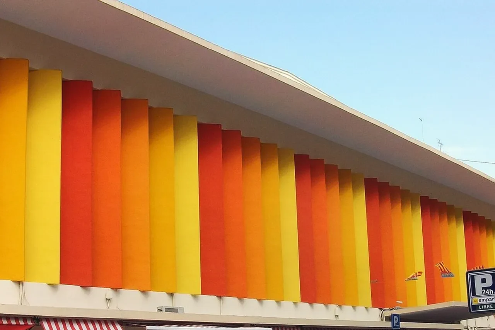
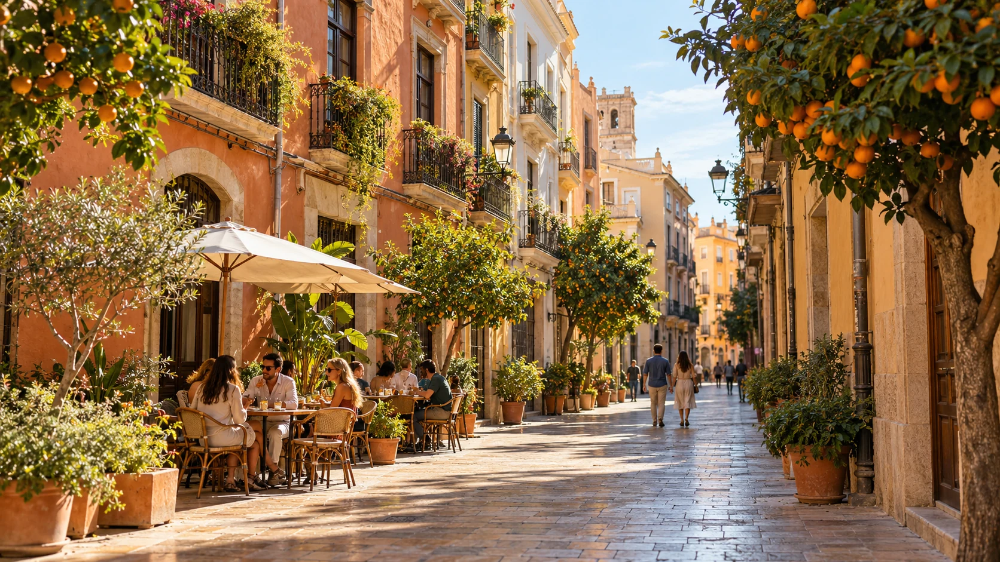
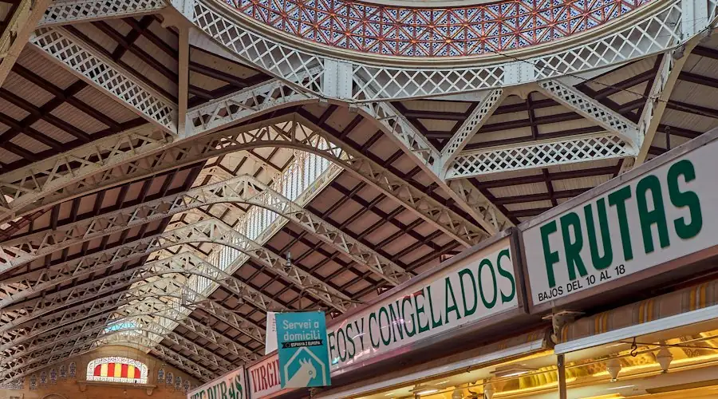

01 / CITY ENERGY
Ruzafa
For a move with cafés, creative corners and lively evenings in the picture.
NIE, flat, school, bank and friends — personal guidance brings the practical details into one clear plan.

Personal guidance, local perspective
HOW IT WORKS

Christa Brokke moved with her family in 2004 and founded Moving2Valencia in 2008. International organisation and local experience, together.
BUILD YOUR EVERYDAY
A few possibilities, a little curiosity. Save the places you want to discuss — your next chapter starts with what matters to you.

For a move with cafés, creative corners and lively evenings in the picture.

Put a coastal rhythm on your conversation list.
Explore the character of old streets and a life closer to the city’s history.
Start with a wish for neighbourhood familiarity and everyday connection.
Illustrative imagery · Explore possibilities, then check the practical fit.
Want a starting point? Try the barrio matcher ↓Timeline, documents, budget.
NIE, TIE, padrón, bank, insurance.
Viewings, lease review, utilities.
Visits, enrolment, transition.

Mercado CentralDinner at ten, Fallas in March, Valencian next to Spanish — coaching that turns a move into a life.
Hacienda letters, TIE renewals, lease questions. Discuss the ongoing support your circumstances need.
Compare the support you need. Confirm scope, availability and any additional fees with Christa before proceeding.
The route you will use every day.
01 · Your routine
Discuss work, school and transport together with your home-finding priorities.
A practical plan behind the possibility.
02 · Your next steps
Bring your shortlist, timing and questions into one conversation with Christa.
Share your preferred timing as early as you can. Christa will discuss which appointments, home-finding steps and school questions apply to your move.
Yes. Your roadmap is built around your specific visa route and its document requirements.
Ask Christa which viewing arrangements are available for your circumstances.
A first conversation. A clearer starting point.